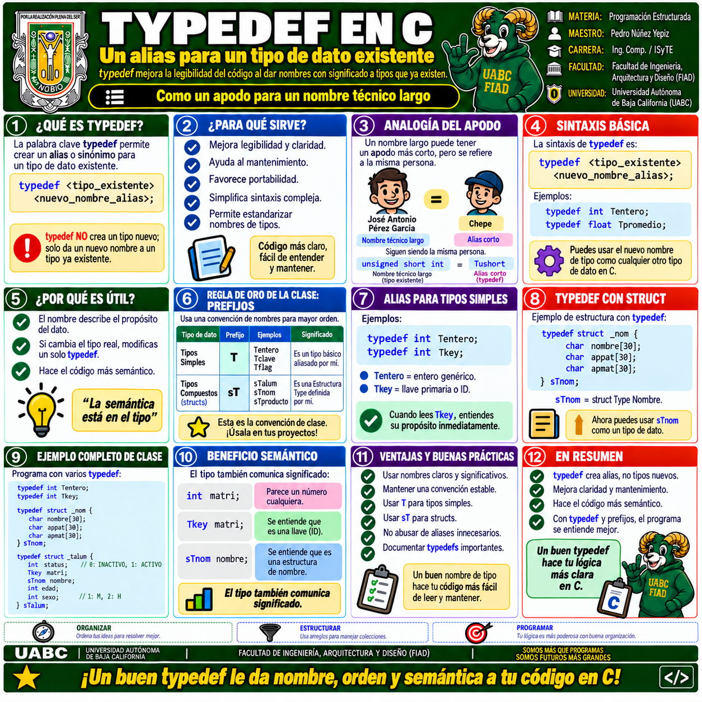

🏷️ Material visual · typedef en C
Esta infografía resume los conceptos principales del Tema 8:
qué es typedef, para qué sirve, su sintaxis,
la analogía del apodo, convenciones de nomenclatura,
alias para tipos simples y su aplicación con
struct.
Selecciona la imagen para visualizarla a mayor tamaño y utilizar las herramientas de navegación y zoom.

1 · typedef en C · Alias y abstracción de tipos
Alias de tipos, sintaxis, ventajas, convenciones de nombres,
tipos simples y uso de typedef con estructuras.
🧠 ¿Qué debes identificar en la infografía?
1️⃣
ALIAS
typedef asigna un nombre alternativo a un tipo
que ya existe.
2️⃣
SEMÁNTICA
Un nombre como
Un nombre como
Tkey comunica mejor el propósito
del dato.
3️⃣
CONVENCIÓN
En la clase se utilizan prefijos para reconocer rápidamente tipos definidos por el programador.
En la clase se utilizan prefijos para reconocer rápidamente tipos definidos por el programador.
4️⃣
STRUCT
typedef simplifica la declaración y reutilización
de estructuras.
🎯
EN RESUMEN
typedef no cambia el significado interno del tipo:
crea un nombre alternativo que puede hacer el programa más claro,
semántico y fácil de mantener.